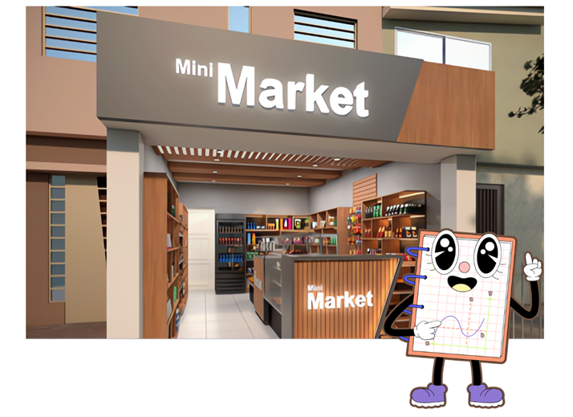
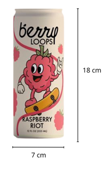
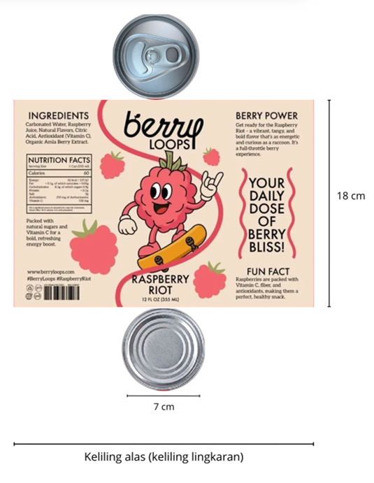
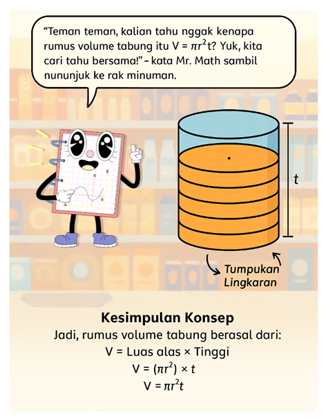

🎯 MATERI
BAB II. MENGENAL TABUNG
Pernahkah kalian berkunjung ke minimarket? Melihat apa sajakah kalian di sana? Banyak benda seperti kaleng susu, botol minuman, hingga tempat pensil logam ternyata berbentuk tabung, loh! Yuk, kita pelajari bagaimana cara menghitung volume dan luas permukaan tabung!
🎓 Tujuan Pembelajaran
- Menentukan Luas Tabung
- Menentukan Volume Tabung
- Memecahkan soal cerita dari Luas dan Volume Tabung
MENGENAL TABUNG
Hai teman-teman! Sebelum menghitung luas dan volume, yuk kenali dulu apa itu tabung!

Coba perhatikan benda-benda ini! “Semua benda ini mirip bentuknya, kan? Nah, bentuk itu disebut tabung!”
✨ Ciri-Ciri Tabung
- Memiliki dua bidang alas dan tutup berbentuk lingkaran yang sama besar.
- Memiliki selimut tabung yang bisa dibuka menjadi persegi panjang.
- Tidak memiliki titik sudut.
- Memiliki tinggi (t) yang merupakan jarak antara alas dan tutup.
📐 Bagian-Bagian Tabung
| Bagian | Keterangan | Bentuk |
|---|---|---|
| Alas & Tutup | Dua bidang berbentuk lingkaran | Lingkaran |
| Selimut Tabung | Bidang melengkung penghubung alas dan tutup | Persegi panjang |
| Tinggi (t) | Jarak antara alas dan tutup | Garis tegak lurus |
| Jari-jari (r) | Jarak dari pusat ke sisi lingkaran | Garis dari pusat ke tepi |
Dari jaring-jaring inilah nanti kita bisa menghitung luas permukaan tabung, yaitu gabungan dari dua lingkaran dan satu persegi panjang.
Topik A. Luas Permukaan Tabung
✨ Pertanyaan Pemantik:
- Apa itu luas permukaan tabung?
- Bagaimana cara menghitungnya?
- Bagaimana bentuk jaring-jaring tabung?
📘 MATERI
Setelah melihat kaleng minuman ini, ayo kita hitung berapa luas permukaan kaleng tersebut! Jika kita buka bagian selimutnya, bentuknya seperti persegi panjang. Luas seluruh permukaan tabung = 2 luas lingkaran + luas persegi panjang (selimut).
Contoh 1: 
Rumus luas permukaan tabung:
Luas permukaan = 2 × luas lingkaran + luas persegi panjang
Luas lingkaran = π × r²
Luas persegi panjang = keliling lingkaran × tinggi = 2πr × t
Maka: L = 2πr(r + t)
Keterangan:
r = jari-jari alas
t = tinggi tabung
Contoh Perhitungan 1:
Diketahui: t = 18 cm, d = 7 cm → r = 3,5 cm
L = 2 × 22/7 × 3,5 × (3,5 + 18)
= 2 × 22/7 × 3,5 × 21,5
= 473 cm²
Jadi, luas permukaan kaleng ≈ 473 cm²
Contoh 2:
Diketahui: d = 20 cm → r = 10 cm, t = 10 cm
L = 2 × 3,14 × 10 × (10 + 10)
= 2 × 3,14 × 10 × 20
= 1256 cm²
Jadi, luas permukaan kaleng ≈ 1256 cm²
🧮 Latihan Soal:
- r = 7 cm dan t = 10 cm
- r = 3,5 cm dan t = 18 cm
- r = 6 cm dan t = 14 cm
- r = 4,5 cm dan t = 12 cm
- r = 5 cm dan t = 20 cm
🎯 Soal Cerita:
- Mr. Math ingin menghias toples berbentuk tabung (r = 8 cm, t = 20 cm). Hitung luas stiker yang dibutuhkan!
- Sebuah kaleng minuman energi memiliki r = 3,5 cm dan t = 12 cm. Hitung volume airnya!
- Tempat pensil logam memiliki r = 4 cm dan t = 10 cm. Hitung luas cat yang dibutuhkan!
- Tangki air memiliki r = 25 cm dan t = 60 cm. Berapa volume air yang dapat ditampung?
- Mr. Math ingin menempel label pada kaleng susu (r = 5 cm, t = 14 cm). Berapa luas labelnya?
Topik B. Volume Tabung
✨ Pertanyaan Pemantik:
- Apa yang dimaksud dengan volume tabung?
- Bagaimana cara menghitung volume tabung dari benda di sekitar kita?
- Mengapa hasil volume tabung bergantung pada jari-jari dan tinggi?
Sekarang kita akan jalan-jalan ke supermarket lagi. Suatu ketika Mr. Math sedang membantu kasir menata rak minuman. “Lihat, rak ini penuh dengan kaleng minuman berbentuk tabung!” kata Mr. Math. “Kira-kira, berapa banyak air yang bisa ditampung oleh satu kaleng ya?”
Mr. Math pun mengajak kalian menghitung volume tabung dari kaleng tersebut. Volume menunjukkan seberapa banyak isi yang dapat ditampung di dalam suatu wadah.
“Volume tabung menunjukkan kapasitas isi di dalamnya,” jelas Mr. Math. “Kalau kamu isi kaleng dengan air sampai penuh, volume tabung adalah jumlah air yang bisa masuk ke dalam kaleng itu.”
📚 MATERI VOLUME
Sebelum mengenal tabung, kalian perlu tahu bahwa:
Volume prisma = Luas alas × Tinggi
Nah, tabung juga termasuk bangun ruang seperti prisma, tapi alasnya berbentuk lingkaran.
Karena alas tabung berbentuk lingkaran, maka:
Luas alas = πr²
Karena volume = luas alas × tinggi, maka:
V = πr² × t
“Ayo kita bayangkan tabung itu seperti tumpukan koin,” kata Mr. Math. “Setiap koin berbentuk lingkaran — itu luas alasnya. Kalau kamu tumpuk koin-koin itu sampai setinggi tabung, kamu sedang menghitung berapa banyak lingkaran yang membentuk tabung itu!”
 Dengan kata lain, tabung tersusun dari banyak lingkaran yang ditumpuk setinggi t. Semakin tinggi tabungnya, semakin banyak lingkaran yang bisa disusun, dan semakin besar volumenya.🧮 Contoh 1
Kaleng minuman Berry Loops memiliki:
- Tinggi (t) = 18 cm
- Diameter (d) = 7 cm → r = 3,5 cm
- Gunakan π = 22/7
Hitunglah volumenya!
Penyelesaian:
Diketahui: r = 3,5 cm, t = 18 cm, π = 22/7
V = π × r² × t
V = 22/7 × 3,5 × 3,5 × 18
V = 22 × 0,5 × 3,5 × 18
V = 11 × 3,5 × 18
V = 38,5 × 18
V = 693
Jadi, volume kaleng minuman adalah 693 cm³.
✍️ Latihan Soal Volume
Tentukan volume dari tabung dengan ketentuan berikut:
- r = 7 cm dan t = 10 cm
- r = 3,5 cm dan t = 18 cm
- r = 6 cm dan t = 14 cm
- r = 4,5 cm dan t = 12 cm
- r = 5 cm dan t = 20 cm
Untuk Materi Luas permukaan dan volume tabung lebih mandalam, sobat Mr Math bisa cek di video ini:
Video Pembelajaran Luas dan Volume Tabung
Topik c. Memecahkan Masalah Luas dan Volume Tabung dalam Kehidupan Sehari-hari
✨ Pertanyaan Pemantik:
- Di mana kita bisa menggunakan perhitungan luas dan volume tabung dalam kehidupan nyata?
- Bagaimana cara menentukan bahan pembungkus atau isi wadah berbentuk tabung?
- Mengapa penting memahami luas dan volume tabung dalam kegiatan sehari-hari?
Hari ini, Mr. Math pergi ke Percetakan Kemasan. Ia melihat pekerja sedang menempelkan label pada kaleng minuman dan menuang air ke dalam botol berbentuk tabung. “Wah, sepertinya mereka sedang menghitung luas label dan isi botol ya!” kata Mr. Math sambil tersenyum.
Mr. Math kemudian mengajak kalian untuk memecahkan beberapa masalah nyata menggunakan konsep luas permukaan dan volume tabung. Ia berkata: “Kalian tahu nggak, dalam kehidupan sehari-hari kita sering menghitung luas untuk menutupi permukaan, dan volume untuk mengukur isi di dalamnya? Yuk, kita latihan!”
Sekarang kita akan jalan-jalan ke supermarket lagi. Suatu ketika Mr. Math sedang membantu kasir menata rak minuman. “Lihat, rak ini penuh dengan kaleng minuman berbentuk tabung!” kata Mr. Math. “Kira-kira, berapa banyak air yang bisa ditampung oleh satu kaleng ya?”
- Luas permukaan tabung digunakan untuk menghitung bahan pembungkus, cat, atau label. Misalnya: menghitung berapa luas stiker yang dibutuhkan untuk menutupi satu kaleng minuman.
- Volume tabung digunakan untuk menghitung kapasitas atau isi benda berbentuk tabung. Misalnya: menghitung banyaknya air, susu, atau minyak yang bisa dimasukkan ke dalam wadah tabung.
📝 LATIHAN SOAL
Kerjakan soal-soal berikut untuk melatih kemampuan kalian dalam menerapkan konsep luas dan volume tabung pada situasi nyata!
- Sebuah toples kue berbentuk tabung memiliki jari-jari 7 cm dan tinggi 20 cm. Hitung volume toples tersebut!
- Sebuah kaleng minuman memiliki diameter 6 cm dan tinggi 12 cm. Hitung luas label yang diperlukan untuk menutupi bagian selimut kaleng!
- Sebuah drum kecil memiliki jari-jari 25 cm dan tinggi 40 cm. Hitung volume air yang dapat ditampung drum tersebut dalam liter! (1 liter = 1.000 cm³)
- Mr. Math ingin mengecat sebuah tabung logam dengan jari-jari 8 cm dan tinggi 15 cm. Hitung luas seluruh permukaan tabung yang akan dicat!
- Sebuah wadah susu berbentuk tabung memiliki jari-jari 4 cm dan tinggi 10 cm. Hitung berapa banyak susu (dalam cm³) yang dapat dimasukkan ke dalam wadah tersebut, dan berapa luas label yang diperlukan jika hanya menutup bagian selimut tabung!
📘 Latihan Tambahan
Kerjakan juga latihan tambahan berikut agar kalian semakin terampil dalam menghitung volume dan luas permukaan tabung!
- Sebuah kaleng susu bubuk memiliki jari-jari 5 cm dan tinggi 12 cm. Tentukan volumenya!
- Sebuah botol minuman energi memiliki diameter 6 cm dan tinggi 15 cm. Hitung berapa volume air yang bisa ditampung botol tersebut.
- Sebuah toples kue berbentuk tabung memiliki jari-jari 8 cm dan tinggi 10 cm. Hitung volumenya!
- Tempat pensil logam memiliki diameter 10 cm dan tinggi 20 cm. Tentukan volumenya!
- Sebuah drum air kecil memiliki jari-jari 25 cm dan tinggi 60 cm. Hitung berapa liter air yang bisa ditampung drum tersebut!
- Sebuah kaleng susu bubuk memiliki jari-jari 5 cm dan tinggi 12 cm. Tentukan volumenya!
- Sebuah botol minuman energi memiliki diameter 6 cm dan tinggi 15 cm. Hitung berapa volume air yang bisa ditampung botol tersebut.
- Sebuah toples kue berbentuk tabung memiliki jari-jari 8 cm dan tinggi 10 cm. Hitung volumenya!
- Tempat pensil logam memiliki diameter 10 cm dan tinggi 20 cm. Tentukan volumenya!
- Sebuah drum air kecil memiliki jari-jari 25 cm dan tinggi 60 cm. Hitung berapa liter air yang bisa ditampung drum tersebut!